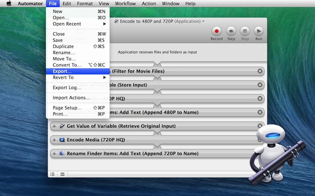
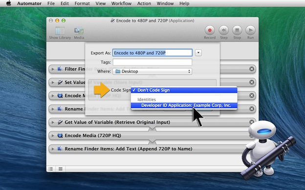

The export procedure for saving a signed version of an Automator applet, is similar to the procedure used by the AppleScript Editor.

DO THIS ►With the application workflow open in Automator, select the Export… menu option from the File menu. (see above)
The standard save sheet will drop down over the script window (see below). Note the addition of a Code Sign popup menu. By default, the popup menu is set to the option titled Don’t Code Sign.

DO THIS ►Click on the Code Sign popup menu and select your developer signing from the drop-down menu.
DO THIS ►With your developer signature chosen, select the destination for the file and then click the Export button.
A signed version of the workflow application will be saved to disk. You can now distribute the exported version to others to use on their computers running GateKeeper.